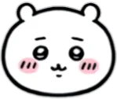
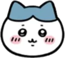
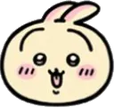
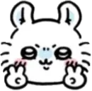
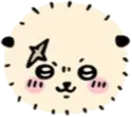
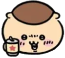
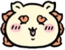
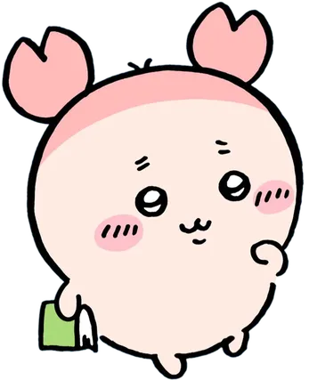

From Wikipedia, the free encyclopedia
Chiikawa (ちいかわ), also known as Chiisakute Kawaii Yatsu (なんか小さくてかわいいやつ, "Something Small and Cute"), is a Japanese manga series by Nagano. It has been serialized online via Twitter since January 2020 and has been collected in five tankōbon volumes by Kodansha. An anime television series adaptation by Doga Kobo premiered in April 2022.
 Chiikawa(ちいかわ) / CV. Haruka Aoki
 Hachiware(ハチワレ) / CV. Masato Tanaka
 Usagi(うさぎ) / CV. Ari Ozawa
 Momonga(モモンガ) / CV. Yuka Iguchi
 Rakko(ラッコ) CV. Yuma Uchida
 Kuri-Manju(くりまんじゅう) CV. Takayuki Asai
 Shisa(シーサー) / CV. Shimabukuro Miyuri
 Kani(カニ) [1]
[Nagano's one of a kind universe!]
Something small and cute.
A story of pleasant, mournful, slightly rough days.
Chiikawa is loved and warmed by everyone, and just wants to stay like that...
But why are there so much unknown beings around...?!
Despite the challenges that surround Chiikawa, there are always hard-working creatures,
Including close friends Hachiware and Usagi.
It also contains special episodes that can only be seen in these series.
Another "Nagano World" opens here now!